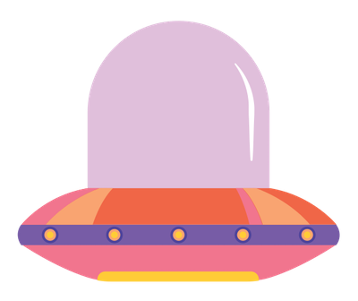

Lore podcast exposes the darker side of history, exploring the creatures, people, and places of our wildest nightmares.
Each episode examines a new dark historical tale in a modern campfire experience.
New episodes are released every other Monday.
